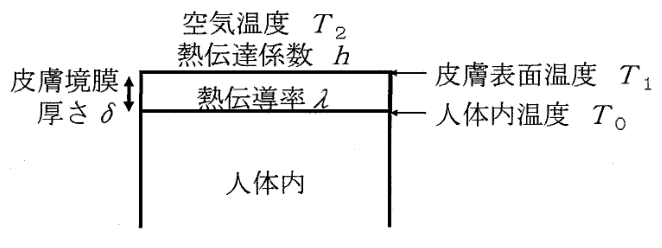

令和7年度 問34 化学プロセス
空気温度 \(T_2 = 29.0\ ^\circ\mathrm{C}\)、人体内温度 \(T_0 = 36.5\ ^\circ\mathrm{C}\) のとき、皮膚表面温度 \(T_1\ [^\circ\mathrm{C}]\) に最も近い値はどれか。皮膚の下に厚さ \(\delta = 4.00\ \mathrm{mm}\) の温度境膜（皮膚境膜）を考え、熱伝導率 \(\lambda = 0.21\ \mathrm{W\,m^{-1}\,K^{-1}}\) とする。また、皮膚表面空気側の熱伝達係数を \(h = 8.8\ \mathrm{W\,m^{-2}\,K^{-1}}\) とする。

①
31.5℃
②
33.0℃
③
34.0℃
④
35.5℃
⑤
36.5℃
正答
④ 35.5℃
皮膚境膜内の熱伝導（伝導）と、皮膚表面から空気への熱伝達（対流）が定常状態で等しいとして式を立てます。
$$\frac{\lambda (T_0 - T_1)}{\delta} = h (T_1 - T_2)$$問題で与えられた値（皮膚境膜厚さ \(\delta = 0.004\ \mathrm{m}\)、熱伝導率 \(\lambda = 0.21\)、熱伝達係数 \(h = 8.8\)）と、\(T_0 = 36.5\ ^\circ\mathrm{C}\)、\(T_2 = 29.0\ ^\circ\mathrm{C}\) を代入します。\(\lambda/\delta = 52.5\) なので
$$52.5\,(36.5 - T_1) = 8.8\,(T_1 - 29.0)$$\(T_1\) について解くと
$$T_1 = \frac{52.5\times36.5 + 8.8\times29.0}{52.5 + 8.8} \approx 35.4\ ^\circ\mathrm{C}$$となり、最も近い④（35.5℃）が正答です。